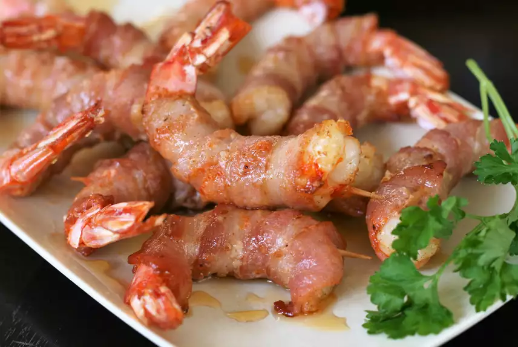

Air-Fried Bacon-Wrapped Shrimp

Description
A delicious and cheap bacon wrapped shrimp recipe sure to please the entire family and get the kids to the table!
Takes 7 minutes to cook with 10 minutes of prep time and 25 additional minutes to refrigerate the shrimp plus bacon for a total of 42 minutes!
Will serve 4.
Ingredients
- 16 jumbo Shrimp, fresh, raw, jumbo (11-15)
- 3/4 teaspoon Cajun seasoning
- 8 strips thin sliced bacon, cut in half
- 16 toothpicks
- 2 tablespoons hot honey (such as Mike's Hot Honey)
Steps
- Place shrimp on a plate and sprinkle both sides with Cajun seasoning. Wrap each shrimp with 1 narrow strip of bacon and fasten with a toothpick. Refrigerate for 25 to 30 minutes.
- Preheat the air fryer to 400 degrees F (200 degrees C).
- Air-fry shrimp for 3 minutes. Flip and continues cooking until bacon is lightly crispy, 4 to 5 minutes more. You may have to do 2 batches depending on the size of your air fryer.
- Remove shrimp to a plate and drizzle with hot honey. Serve immediately, being watchful of any toothpicks.